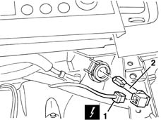

5010D27 upper mixed air temperature sensor (1), lh or rh - r r following electrical circuit check
- Path
- Procedures > 50 AUXILIARY UNITS > 5010 CLIMATE CONTROL - MISCELLANEOUS > 5010D air temperature recording system > 5010D27 upper mixed air temperature sensor (1), lh or rh - r r following electrical circuit check
- Kind
- repair procedure (removal / refitting; the operation number is the code)
- Applies to
- all engines; all production periods
- Interactive page
- https://sloeber94.github.io/elrnDB-lYpsln/en/#/2429289
Applies to: all engines; all production periods
 Removing
Removing
 Refitting
Refitting7040L28 tunnel switch panel - r r
7040L22 REAR TRIM on TUNNEL -R.R.
7040A18 glove compartment on facia - arrange
7040A30 Left instrument panel lower TRIM - R.R.
2125A30 lever/knob cover - r + r
7040A28 TRIM on gearbox control panel - R.R.
5505A25 SWITCH UNIT for OPTIONAL EQUIPMENT - R.R.
5040D18 air conditioner control unit - r r
1. Disconnect the electrical connection.
 | Name | Connector |
|---|---|---|
1 | Right upper air distribution temperature sensor |
| Name | Connector |
|---|---|---|
1 | Left upper air distribution temperature sensor |
2. Extract the sensor (press fit).

Applies to: all engines; all production periods
Refitting
RemovingCheck that the sensor is not damaged.
Fit the sensor in place and connect the electrical connection.
5040D18 air conditioner control unit - r r
5505A25 SWITCH UNIT for OPTIONAL EQUIPMENT - R.R.
7040A28 TRIM on gearbox control panel - R.R.
2125A30 lever/knob cover - r + r
7040A30 Left instrument panel lower TRIM - R.R.
7040A18 glove compartment on facia - arrange
7040L22 REAR TRIM on TUNNEL -R.R.
7040L28 tunnel switch panel - r r
Using the Examiner, check that the system has not picked up errors during the operation.
Topics linked from this page (11)
- 2125A30 lever/knob cover - r + r
- 5040D18 air conditioner control unit - r r
- 5505A25 SWITCH UNIT for OPTIONAL EQUIPMENT - R.R.
- 7040A18 glove compartment on facia - arrange
- 7040A28 TRIM on gearbox control panel - R.R.
- 7040A30 Left instrument panel lower TRIM - R.R.
- 7040L20 tunnel trim - r r
- 7040L22 REAR TRIM on TUNNEL -R.R.
- 7040L28 tunnel switch panel - r r
- K110 Right upper air distribution temperature sensor
- K112 Left upper air distribution temperature sensor